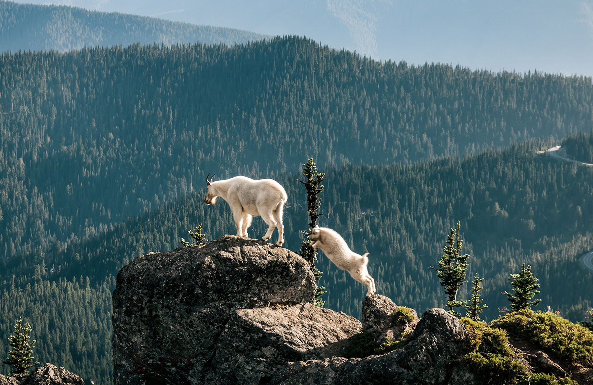
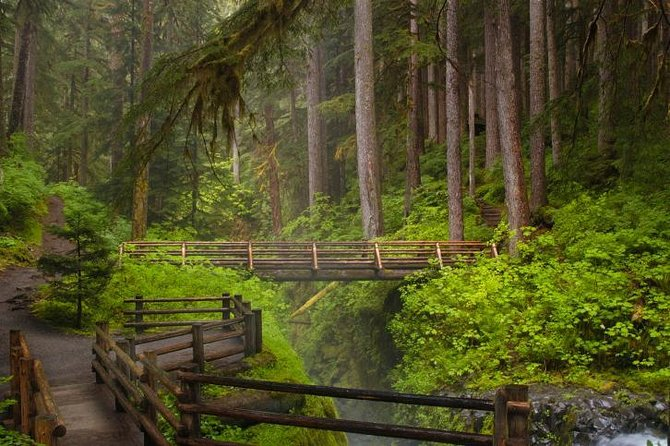
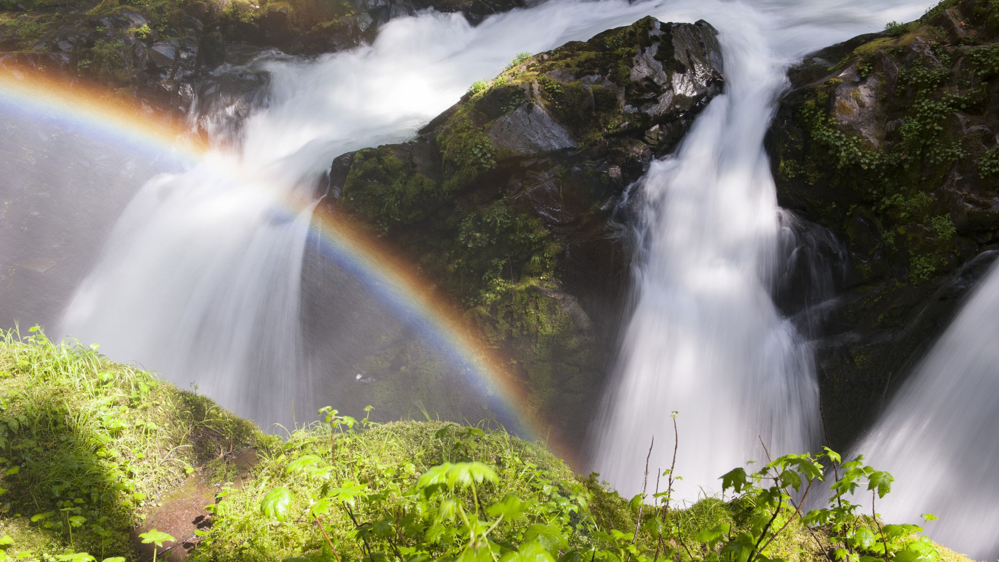

What to do at Olympic National park?
A trip to Olympic National Park will be a very active trip. There are a pleathora of hikes including the Hoh Rain Forest hike and the Hurrican Ridge hike that allow you to see stunning views of the park. There is also Kalaloch and Ruby Beach which house hundreds of marine species including sea lions, whales and bald eagles! If you would like to discover more to do while visiting Olympic National Park, click the image to the left.
Where is Olympic National Park?
Olympic National Park is on the northwestern coast of the state of Washington close to the United States-Canada border. If you would like to see a more detailed map of Olympic National Park, click the image to the right.
How to get to Olympic National Park?
Some of the most common ways of reaching Olympic National Park are by flying into King Country International Airport in Seattle and then you can either drive via car or bus, or take the ferry to the Olympic Peninsula. If you want to learn more about traveling to Olympic National Park, click the image to the left.





Want to see more images of Olympic National Park? Click the image to the right!